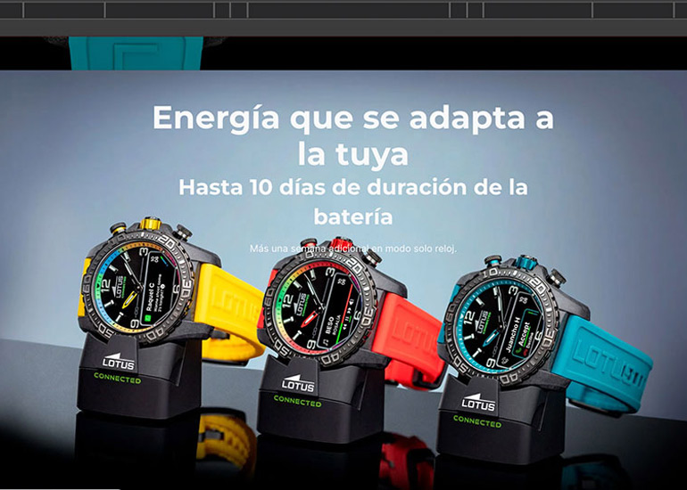

Hi 👋🏼,
I love helping brands to
Stunning aesthetics and seamless functionality? Absolutely. I create user-friendly digital products by understanding user needs, building consistent design systems, and leveraging my web development skills.
Some of my recent work

Festina and Lotus Connected D Desiging Landing Pages

Kronaby ReDesign WebPage

Lotus Smartime Web Page Design

Projects from other life
Things I can help you with
User Experience Design
Crafting intuitive user journeys. ✨ From research to wireframing, I understand user needs and improve the user experience.
User Interface Design
Bringing designs to life. ✨ I create visually stunning and functional interfaces with a focus on modern aesthetics and responsive design.
Design Systems
Building design systems that scale. ✨ I create and maintain consistent design systems for efficient and scalable product development.
HTML & CSS
Bringing designs to life. ✨ I craft functional and visually striking web experiences with HTML & CSS—now refining my JavaScript skills.
Web Accessibility
Designing for everyone. ✨ I ensure all websites are accessible to all users, including those with disabilities, by following WCAG guidelines.
Redesign of Interfaces
Revamping user experiences. ✨ I modernize existing interfaces to enhance usability, improve visual performance, and add exciting new features.
Let's connect!
Drop it like it's hot and hit me at roselly.nunez@gmail.com or find me on my linkedin account.